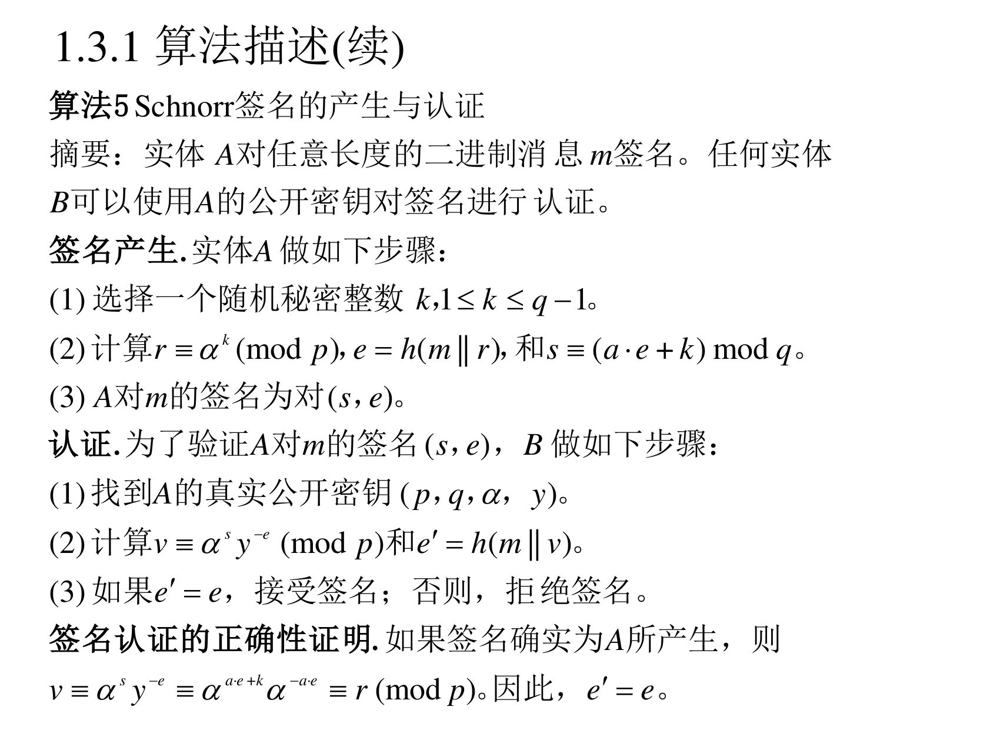
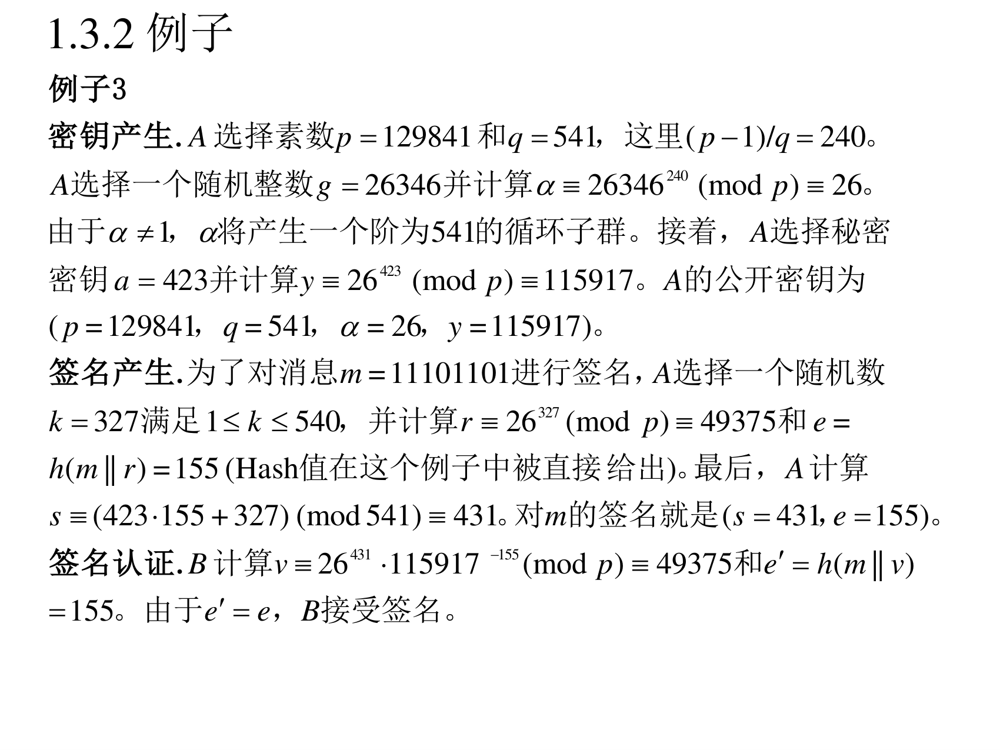

本页目录
8.1.3 Schnorr 签名方案
（PPT 第 23 页）
另一个非常著名的 ElGamal 方案变化是 Schnorr 签名方案 。和 DSA 一样，这一技术使用模 p p p q q q p p p h ( ⋅ ) h(\cdot) h ( ⋅ ) Schnorr 签名方案的密钥产生与 DSA 的密钥产生（算法 1）完全一样 ，除了没有限制 p p p q q q
翻译成人话 ：Schnorr 是"用子群 + Hash 把签名压到最短 "的方案。它的签名是 ( s , e ) (s,e) ( s , e ) 2 × ∣ p ∣ 2\times|p| 2 × ∣ p ∣ α k \alpha^k α k
8.1.3.1 算法 5：签名产生与认证
（PPT 第 24 页）

算法 5（Schnorr 签名的产生与认证）
摘要 ：实体 A 对任意长度的二进制消息 m m m 签名产生. 实体 A 做如下步骤：
(1) 选择一个随机秘密整数 k k k 1 ≤ k ≤ q − 1 1\le k\le q-1 1 ≤ k ≤ q − 1 (2) 计算 r ≡ α k ( m o d p ) r\equiv\alpha^{k}\pmod p r ≡ α k ( mod p ) e = h ( m ∥ r ) e=h(m\|r) e = h ( m ∥ r ) s ≡ ( a ⋅ e + k ) m o d q s\equiv(a\cdot e+k)\bmod q s ≡ ( a ⋅ e + k ) mod q (3) A 对 m m m ( s , e ) (s,e) ( s , e ) 认证. 为了验证 A 对 m m m ( s , e ) (s,e) ( s , e ) (1) 找到 A 的真实公开密钥 ( p , q , α , y ) (p,q,\alpha,y) ( p , q , α , y ) (2) 计算 v ≡ α s y − e ( m o d p ) v\equiv\alpha^{s}y^{-e}\pmod p v ≡ α s y − e ( mod p ) e ′ = h ( m ∥ v ) e'=h(m\|v) e ′ = h ( m ∥ v ) (3) 如果 e ′ = e e'=e e ′ = e 签名认证的正确性证明. 如果签名确实为 A 所产生，则
v ≡ α s y − e ≡ α a ⋅ e + k α − a ⋅ e ≡ α k ≡ r ( m o d p ) v\equiv\alpha^{s}y^{-e}\equiv\alpha^{a\cdot e+k}\alpha^{-a\cdot e}\equiv\alpha^{k}\equiv r\pmod p v ≡ α s y − e ≡ α a ⋅ e + k α − a ⋅ e ≡ α k ≡ r ( mod p ) e ′ = e e'=e e ′ = e
翻译成人话 （Schnorr 的精妙之处）：
签名 ：s = a e + k s=ae+k s = a e + k 注意这里只有加法/乘法，没有求逆元 ！比 DSA 和 ElGamal 都简单（不需要算 k − 1 k^{-1} k − 1 s − 1 s^{-1} s − 1 e e e m m m e = h ( m ∥ r ) e=h(m\|r) e = h ( m ∥ r ) 验证 ：算 v = α s y − e v=\alpha^{s}y^{-e} v = α s y − e 正好等于 r r r 。因为 s = a e + k s=ae+k s = a e + k v = α a e + k α − a e = α k = r v=\alpha^{ae+k}\alpha^{-ae}=\alpha^{k}=r v = α a e + k α − a e = α k = r e ′ = h ( m ∥ v ) e'=h(m\|v) e ′ = h ( m ∥ v ) e e e 这一手叫"Fiat-Shamir 变换" ：把交互式零知识证明变成非交互式签名。注意验证里那个 r r r ：签名只发 ( s , e ) (s,e) ( s , e ) r r r 自己算出来的 v v v r r r ( s , e ) (s,e) ( s , e )
8.1.3.2 例子 3
（PPT 第 25 页）

例子 3
密钥产生. A 选择素数 p = 129841 p=129841 p = 129841 q = 541 q=541 q = 541 ( p − 1 ) / q = 240 (p-1)/q=240 ( p − 1 ) / q = 240 g = 26346 g=26346 g = 26346 α ≡ 2634 6 240 ( m o d p ) ≡ 26 \alpha\equiv26346^{240}\pmod p\equiv26 α ≡ 2634 6 240 ( mod p ) ≡ 26 α ≠ 1 \alpha\ne1 α = 1 α \alpha α a = 423 a=423 a = 423 y ≡ 2 6 423 ( m o d p ) ≡ 115917 y\equiv26^{423}\pmod p\equiv115917 y ≡ 2 6 423 ( mod p ) ≡ 115917 ( p = 129841 , q = 541 , α = 26 , y = 115917 ) (p=129841,\ q=541,\ \alpha=26,\ y=115917) ( p = 129841 , q = 541 , α = 26 , y = 115917 ) 签名产生. 为了对消息 m = 11101101 m=11101101 m = 11101101 k = 327 k=327 k = 327 1 ≤ k ≤ 540 1\le k\le540 1 ≤ k ≤ 540 r ≡ 2 6 327 ( m o d p ) ≡ 49375 r\equiv26^{327}\pmod p\equiv49375 r ≡ 2 6 327 ( mod p ) ≡ 49375 e = h ( m ∥ r ) = 155 e=h(m\|r)=155 e = h ( m ∥ r ) = 155 s ≡ ( 423 ⋅ 155 + 327 ) ( m o d 541 ) ≡ 431 s\equiv(423\cdot155+327)\pmod{541}\equiv431 s ≡ ( 423 ⋅ 155 + 327 ) ( mod 541 ) ≡ 431 m m m ( s = 431 , e = 155 ) (s=431,\ e=155) ( s = 431 , e = 155 ) 签名认证. B 计算 v ≡ 2 6 431 ⋅ 11591 7 − 155 ( m o d p ) ≡ 49375 v\equiv26^{431}\cdot115917^{-155}\pmod p\equiv49375 v ≡ 2 6 431 ⋅ 11591 7 − 155 ( mod p ) ≡ 49375 e ′ = h ( m ∥ v ) = 155 e'=h(m\|v)=155 e ′ = h ( m ∥ v ) = 155 e ′ = e e'=e e ′ = e
核对 （全部验算过）：
2634 6 240 m o d 129841 = 26 26346^{240}\bmod129841=26 2634 6 240 mod 129841 = 26 2 6 423 m o d 129841 = 115917 26^{423}\bmod129841=115917 2 6 423 mod 129841 = 115917 2 6 327 m o d 129841 = 49375 26^{327}\bmod129841=49375 2 6 327 mod 129841 = 49375 423 × 155 + 327 = 65565 + 327 = 65892 423\times155+327=65565+327=65892 423 × 155 + 327 = 65565 + 327 = 65892 65892 m o d 541 65892\bmod541 65892 mod 541 541 × 121 = 65461 541\times121=65461 541 × 121 = 65461 65892 − 65461 = 431 65892-65461=431 65892 − 65461 = 431 2 6 431 × 11591 7 − 155 m o d 129841 = 49375 = r 26^{431}\times115917^{-155}\bmod129841=49375=r 2 6 431 × 11591 7 − 155 mod 129841 = 49375 = r v v v r r r
8.1.3.3 效能问题
（PPT 第 26 页）
在算法 5 中签名产生需要一次以 p p p 可以离线计算 。由于仅使用 Hash 算法，得到 h ( m ∥ r ) h(m\|r) h ( m ∥ r ) 两次 以 p p p 同步计算 的方法大约相当于 1.17 次模幂 。使用阶为 q q q 在相同安全强度下却可以提供比 ElGamal 签名方案更短的签名 。
翻译成人话 ：Schnorr 的三个卖点：
签名可离线预计算 （α k \alpha^k α k 认证两次模幂可以合成 1.17 次 （多指数技巧）；签名短 （两个 160 比特量级的数，而 ElGamal 签名是两个 1024 比特的数）。